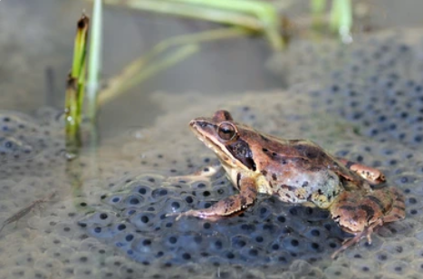
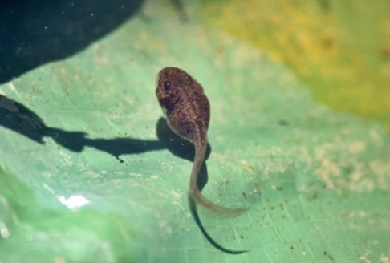
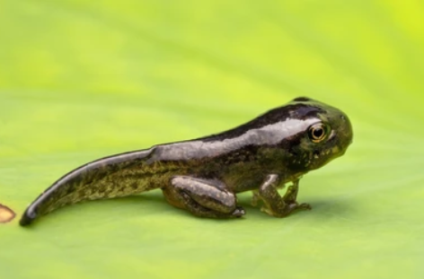
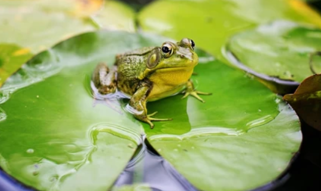

Frog life cycles are closely linked to water, making
the conservation of freshwater habitats essential for their
survival. Many frog species face threats due to habitat
destruction, pollution, and climate change.
Egg

Frog eggs take between two to three weeks to hatch
The life of a frog begins as a tiny, gelatinous egg, often
laid in or near water. These eggs are carefully deposited by
adult frogs and come in various shapes, sizes, and colors.
They may be attached to aquatic plants or floating on the
water's surface. Eggs are equipped with protective jelly
coatings that shield them from predators and harmful
microorganisms.
Tadpole

Immediately upon hatching, the frog eggs become tadpoles. They then spend about 14 weeks slowly metamorphosing into adult frogs.
Once the eggs hatch, they give rise to tadpoles, which
are essentially baby frogs. Tadpoles are well-adapted to
aquatic life, featuring gills for underwater breathing.
They sport long tails and swim with graceful movements,
feeding on algae and detritus. As they grow, tadpoles undergo
a series of metamorphic changes, gradually developing limbs
and losing their tails.
Froglet

During the later parts of metamorphosis, the young tadpoles turn into froglets.
Tadpoles eventually undergo a dramatic transformation
into froglets. During this metamorphosis, their tails shrink
and are absorbed into their bodies, while legs fully develop.
Froglets emerge from the water and begin to explore the
world on land. At this stage, they often have a more youthful
appearance compared to adult frogs, with smoother skin and
smaller sizes.
Adult Frog

It takes around 16 weeks from eggs being laid to young adult frogs coming out of the pond.
The final stage of a frog's life cycle is the transition
to adulthood. Adult frogs are characterized by their fully
developed limbs, distinct skin patterns, and the ability to
breathe both through their lungs and their moist skin. They
come in a myriad of species, each with unique colors, sizes,
and behaviors. Adult frogs leave the water and typically
inhabit terrestrial environments, though many return to
aquatic habitats for breeding.